Domingos
Ver na árvore interativa ✏️ Sugerir correção ➕ Acrescentar filho(a) 📷 Enviar foto ou documento
Dados
- Nascimento
- 11-02-1925 no distrito de Jaciguá, municipio de Cachoeiro de Itapemirim, ES
- Cônjuge
- Rosalina Ballarini
- Casamento
- 01-06-1950, Jaciguá
- Residência
- Cachoeiro de Itapemirim - ES
- Pais
- Jose ~1886 e Dosolina Dalfiôr (~ 1888) natural da Itália, filha de Ferdinando Daifior e Maria Pauli
Família
Filhos (11)
- Lourdes 1951⚭ Wilton Gomes Costa Sobrinho · 2 filhos
- Ilario 1952 †
- Jose 1955⚭ Marlene Buzon · 3 filhos
- Pedro 1955⚭ Marta Tomazini · 2 filhos
- Luzia 1957 †
- Braz 1958⚭ Helena Pereira · 2 filhos
- Fernando 1960⚭ Maria do Carmo Batista Zampirolli · 2 filhos
- Joao Bosco 1962⚭ Lúcia neves gomes · 2 filhos
- Reinaldo 1964⚭ Alzira Rocha Dias · 4 filhos
- Maria Salete 1965⚭ Carlos Alberto Diniz Aguiar · 3 filhos
- Francisco de Assis 1968⚭ Cristina Baptista Moura · 2 filhos
Irmãos (8)
- Maria ~1912 †
- Jacinta⚭ Sebastião Partelli · 7 filhos
- Antonio⚭ Osilia Balarini · 7 filhos
- Afonso⚭ Arminda Curitiba · 11 filhos
- Luiz †
- Josefina⚭ Rafael Monteiro · 6 filhos
- Rosa⚭ Aristides Basso · 5 filhos
- Benjamim⚭ Lucia D'angeles · 6 filhos
Todos os descendentes (33)
Lourdes 1951 ⚭ Wilton Gomes Costa Sobrinho 2
- Ilario 1952 †
- Luzia 1957 †
Braz 1958 ⚭ Helena Pereira 2
- Brunelly Pereira 1986
- Fabricio 1999
Fernando 1960 ⚭ Maria do Carmo Batista Zampirolli 2
- Filipe Batista 1987
- Alice Batista 1991
Joao Bosco 1962 ⚭ Lúcia neves gomes 2
- Igor Nevex 1987
- Ivan Neves 1992
Reinaldo 1964 ⚭ Alzira Rocha Dias 4
- Josiane Dias Neves 1987
- Natani 1994
- Alan Pablo Dias 1994
- Douglas Sennas Dias Galiasso 1997
Maria Salete 1965 ⚭ Carlos Alberto Diniz Aguiar 3
Francisco de Assis 1968 ⚭ Cristina Baptista Moura 2
Fotos
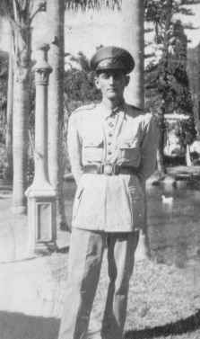
Bodas de Ouro 18 fotos
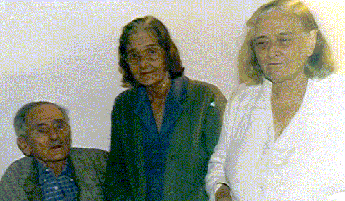
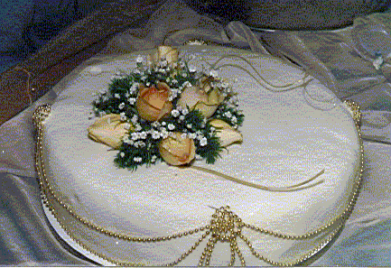

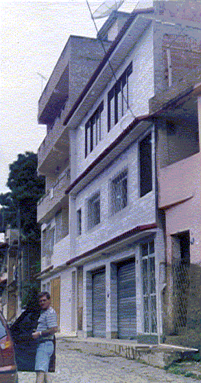
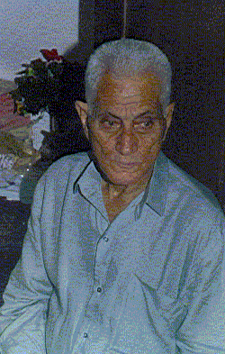
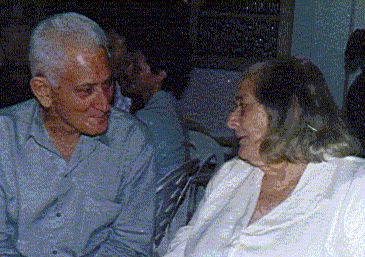
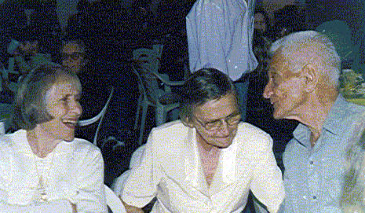
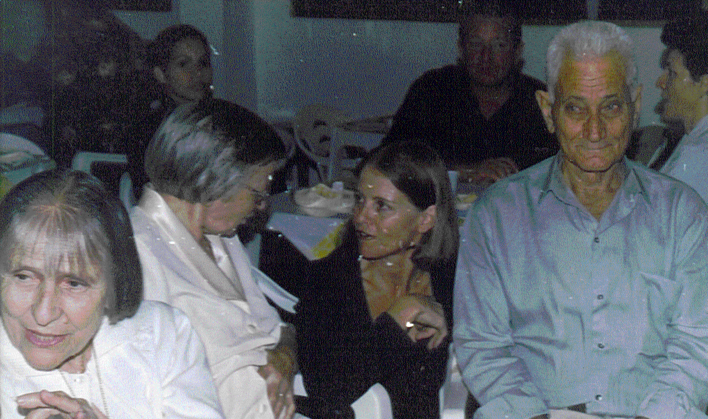
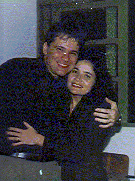
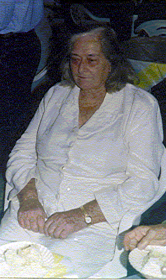
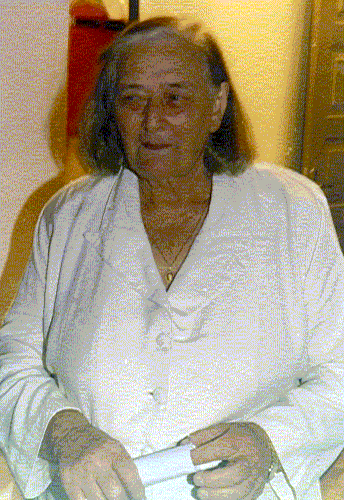
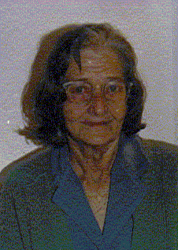
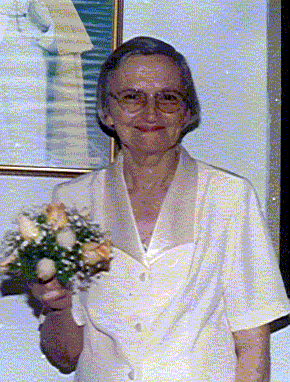
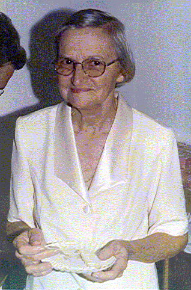
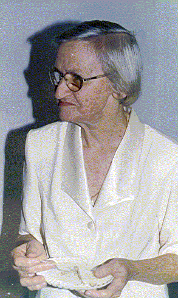
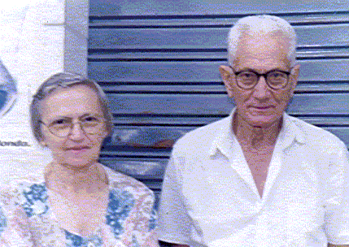
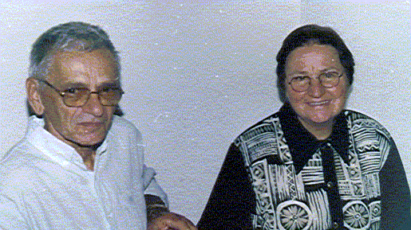
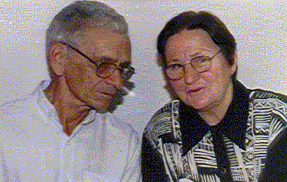
Bodas de Prata 3 fotos


Casa 3 fotos


Casamento da Lourdes 3 fotos


Fotos da Familia 10 fotos

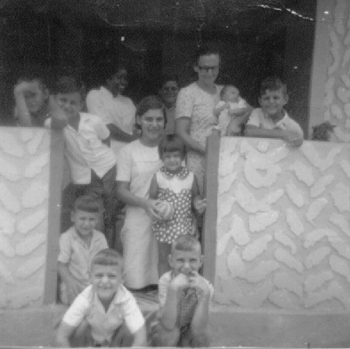

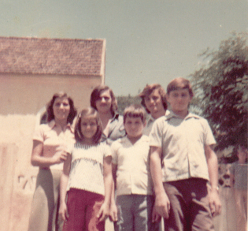

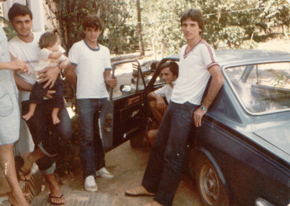

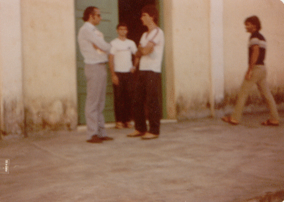

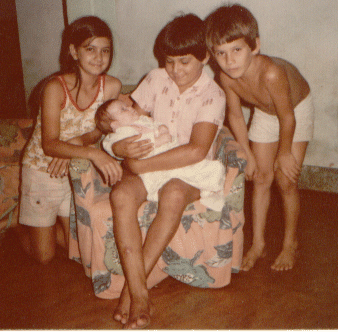

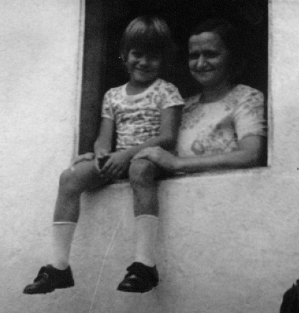

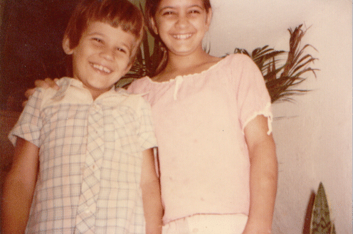

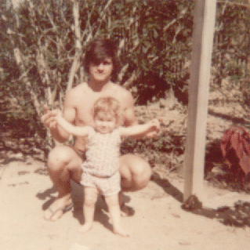

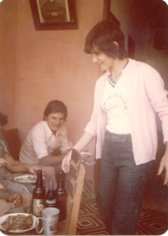

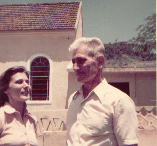
Contexto histórico
Informações sobre lugares e fatos citados acima, pesquisadas em fontes públicas na web. Não são dados pessoais desta pessoa.
Onde a família viveu Cachoeiro de Itapemirim (ES)
O pequeno povoado foi declarado núcleo paroquial em 1856 e tornou-se um município importante no fim do século XIX, impulsionado pelo café, pela pecuária e pelas jazidas de mármore. Estudos demográficos mostram que a contribuição dos imigrantes italianos foi decisiva para a economia da região.
Onde a família viveu Jaciguá e Vargem Alta (ES)
A colonização efetiva de Vargem Alta começou com italianos no fim do século XIX, que encontraram fazendas abandonadas e tomadas pela mata e abriram a estrada que deu origem à ES-164. Vargem Alta foi distrito de Cachoeiro de Itapemirim até se emancipar em 1988; Jaciguá é um de seus distritos. Na década de 1940, famílias de Jaciguá migraram, com incentivo do governo estadual, para o norte do Espírito Santo (região de Jaguaré).
Pasta de origem: 01Giacomo/02Giovanni/01Jose/07Domingos/